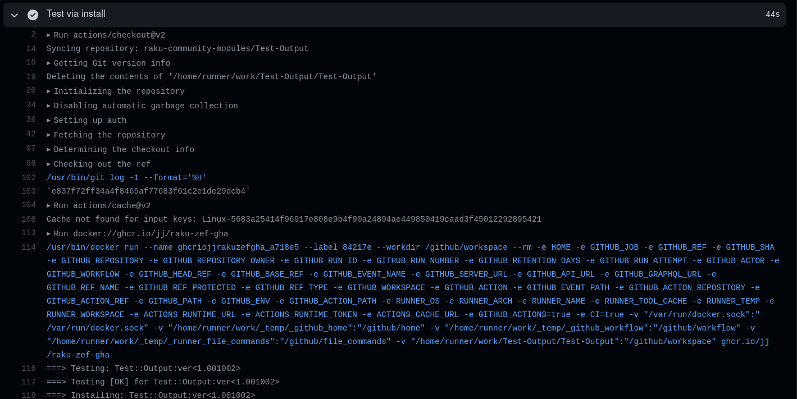

GitHub
Actions (in|for) Raku
JJ Merelo
GitHub Actions are
A flexible workflow execution environment
triggered by repo events
Free for open source repos
Workflows have jobs, which are independent execution
environments
Jobs run sequential steps
Testing your Raku module
on: [ push, pull_request ]
jobs:
test:
runs-on: ubuntu-latest
steps:
- name: Test via install
uses: JJ/raku-test-action@main
This step is properly called an
action
See it... in action

And we have four types of actions
Container
Shell
Javascript
Composite
This is a composite action
name: 'raku-test-action'
description: 'Test raku modules caching dependencies'
branding:
icon: 'life-buoy'
color: 'blue'
runs:
using: "composite"
steps:
- uses: actions/checkout@v2
- name: Cache installed dists
uses: actions/cache@v2
id: meta6
with:
path: ~/.raku/
key: ${{ runner.os }}-${{ hashFiles('META6.json') }}
- name: Test and install for more tests
uses: docker://ghcr.io/jj/raku-zef-gha
We need the composite action to be able to run several
steps
Steps can be
Containers
Other actions
Scripts
Watch our steps
steps:
- uses: actions/checkout@v2 # "Official" action: checks out source
- name: Cache installed dists # "Official" action: caches installed compunits
uses: actions/cache@v2
id: meta6
with:
path: ~/.raku/
key: ${{ runner.os }}-${{ hashFiles('META6.json') }}
- name: Test and install for more tests # Docker container!
uses: docker://ghcr.io/jj/raku-zef-gha
That's its own little Raku container
Any container?
No, not really
GitHub runs specific commands, in certain
directories, with specific privileges
Our container needs to have
Default user UID 1001
git, tar
available
Deal with $HOME=/home/github